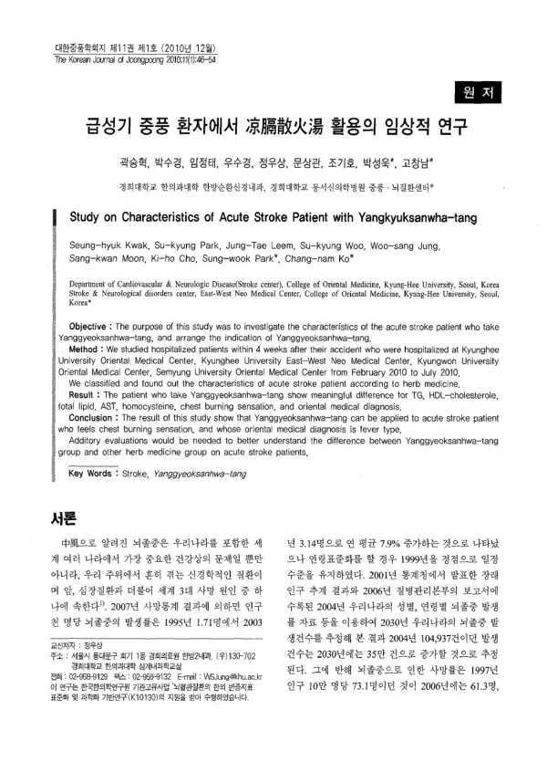

급성기 중풍 환자에서 凉膈散火湯 활용의 임상적 연구
Kwak Sh, Park Sk, Leem Jt, Woo Sk, Jung Ws, Moon Sk, Cho Kh, Park Sw, Ko Cn
The Korean Journal of Joongpoong 11(1):46-54

첫 장 · 오픈액세스First page · open access
논문 소개Summary
같은 시기 같은 네 기관에서 급성기 중풍 환자에게 양격산화탕(凉膈散火湯)을 쓴 경우의 임상 특성을 본 연구입니다. 2010년 2월부터 7월까지 발병 4주 안에 입원한 환자를 모아 한약 처방별로 나누어 견주었습니다. 양격산화탕군은 중성지방과 HDL 콜레스테롤, 총지질, AST, 호모시스테인, 가슴이 타는 듯한 느낌, 한의 변증에서 차이를 보였습니다. 저자들은 흉부 작열감을 호소하고 변증이 열증인 환자에게 적용할 수 있다고 보았고, 다른 한약군과의 차이는 아직 더 확인해야 한다고 적었습니다. 청폐사간탕·곽향정기산 연구와 한 묶음으로 읽어야 하는 연속 연구입니다.
Clinical characteristics of acute stroke patients treated with Yanggyeoksanhwa-tang, drawn from the same four hospitals over the same period. Patients admitted within four weeks of onset between February and July 2010 were grouped by herbal prescription and compared. The Yanggyeoksanhwa-tang group differed in triglycerides, HDL cholesterol, total lipids, AST, homocysteine, a burning sensation in the chest, and pattern identification. The authors judged the prescription applicable to patients reporting chest burning whose pattern is a heat type, while noting that the differences from other herbal groups still require confirmation. It belongs with the Chungpyesagan-tang and Gwakhyangjeonggisan papers as one continuous series.
인용Cite
Kwak Sh, Park Sk, Leem Jt, Woo Sk, Jung Ws, Moon Sk, Cho Kh, Park Sw, Ko Cn. 급성기 중풍 환자에서 凉膈散火湯 활용의 임상적 연구. The Korean Journal of Joongpoong. 2010;11(1):46-54.